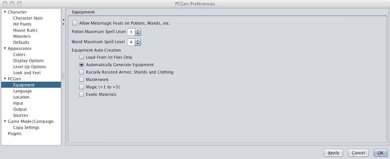
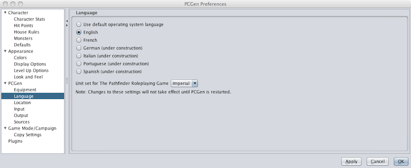
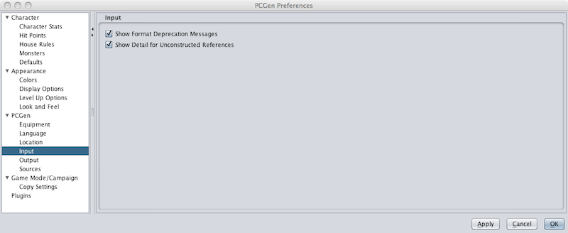
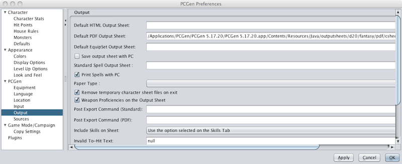
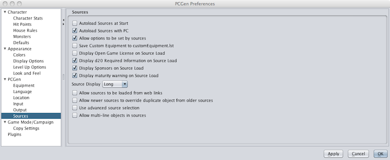

The PCGen Preferences allow the user to configure how/what information is output to the user.

The Equipment settings allow the user to configure the following:

The Language settings allow the user to determine the language and unit set PCGen uses for the GUI.
The Location settings allow the user to determine several default locations. These include the locations where character files are saved, where data sources and output sheets/templates can be found, and the location where PCGen's setting files are stored.

The Input settings allows the user to restrict the reporting of "Deprecation Messages" and "Unconstructed References" that are reported, reducing the number of error messages reported.

The Output settings allow the user to identify specific default selections for output sheets, including the HTML sheet, PDF sheet, Equipment sheet, and Spell sheet. It also allows the user to determine what information is included on the printed sheets and how sheets are handled before and after printing.

The Sources settings allow the user to configure source handling defaults, including when sources are loaded and what other source related information is displayed.